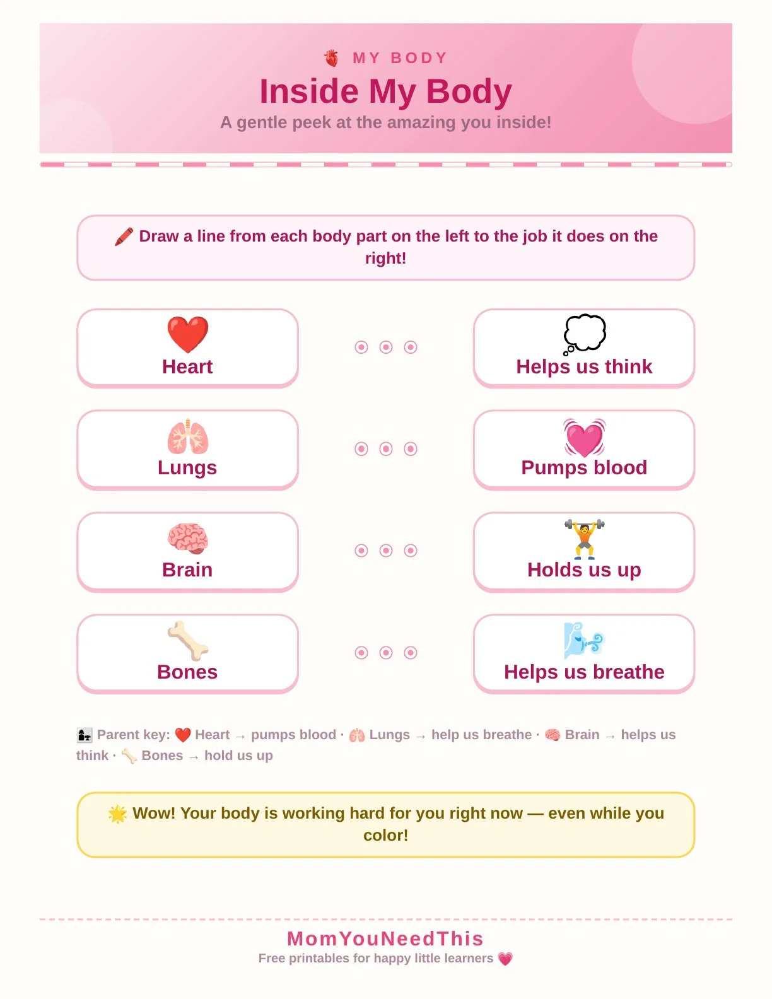

🫁 Inside Our Bodies A Peek Inside You
What is happening inside your body right now? These gentle, age-appropriate activities give curious kids a first look at lungs, tummies and all the busy parts working together.
Quick Answer
This free printable inside-the-body activity introduces toddlers and preschoolers (ages 2–5) to the major organs and what each one does: the brain runs the whole operation, the lungs take in air, the heart pumps blood, the stomach and intestines turn food into fuel. Kids explore the organs in a kid-friendly way, learn what each part does, and match each system to a sensation they can feel. Download and print at home with no signup needed.
At a Glance
- Ages: Toddlers and preschoolers (ages 2–5)
- Activity: Exploring the major organs and what each one does
- Skills: Body science and organ jobs
- Format: Printable worksheet (PDF)
- Cost: Free, no signup
The inside of the body is the one place a child can never look — which makes it the subject of their most persistent questions. This page answers them organ by organ, and every answer comes with something the child can feel from the outside: a breath, a heartbeat, a rumbly tummy. The invisible becomes checkable.
🫁 Explore Inside Our Bodies
Explore major organs in a kid-friendly way, learn what each part does, and marvel at the body.
💡 How To Use This Activity
Print the body pages and pair each system with a sensation your child can actually feel: a deep breath for the lungs, a rumbly tummy for digestion. Take one page at a time and let questions lead — 'what is it doing right now?' is the perfect prompt for every page. The print button opens the full-size page in a new tab if you prefer to print from there.

🖨️ Download Your Free Inside Our Bodies Printable
Explore major organs in a kid-friendly way, learn what each part does, and marvel at the body. Print it out, grab the crayons, and you're ready — no signup needed.
⬇️ Download Free Printable 🖨️ Print🎁 Free printable for toddlers & preschoolers
🔍 The Inside Tour — Six Organs, Six Jobs
The brain — the control center. Every thought, feeling, movement and memory runs through it, and it sends its orders down the spinal cord and out through nerves to everywhere. It is soft, wrinkled, and protected by the skull; it also uses more energy than any other organ, which is one reason thinking hard is genuinely tiring.
The lungs — the air exchangers. Two spongy bags that fill and empty about twenty times a minute in a child. Air goes in carrying oxygen; the blood picks the oxygen up and drops off waste gas, which leaves on the breath out. The ballooning your child feels with a deep breath is the lungs at work.
The heart — the pump. It moves the blood that carries the lungs' oxygen and the stomach's fuel to every cell. (It has its own page on this site — the thump deserves one.)
The stomach and intestines — the fuel processors. The stomach churns food into soup; the long, looping intestines — several metres of them, coiled to fit — pull out the useful parts. A rumbly tummy is this system audibly at work.
The liver and kidneys — the cleaning crew. The liver filters the blood and handles hundreds of chemical jobs; the kidneys strain the blood and make urine from the waste and extra water. Nobody feels them working, which is exactly how they like it.
Six organs, six jobs, one team: the point of the tour is that the body is a system — the lungs feed the blood the heart pumps, the stomach fuels the brain that runs the tour. Your child is not a container of parts; they are a crew.
❓ Inside Our Bodies FAQs
What activities are included in Inside Our Bodies?
This page collects our free inside-the-body printables in one place: exploring the major organs in a kid-friendly way (brain, lungs, heart, stomach, intestines, liver, kidneys), learning what each part does, and matching each system to something your child can feel. Download the printable below and start learning right away.
Are these activities really free?
Yes — every printable on MomYouNeedThis is 100% free to download and print. No signup, no payment, just tap the download button. Take the pages one organ at a time — this is a tour, not a test, and questions are the souvenir. Take the pages one organ at a time — this is a tour, not a test, and questions are the souvenir.
How do I use these activities with my child?
Print the body pages and pair each system with a sensation your child can actually feel: a deep breath for the lungs, a heartbeat for the heart, a rumbly tummy for digestion, thinking hard for the brain. Take one page at a time and let questions lead — “what do you think is happening in there right now?” is a question this set is built to answer.